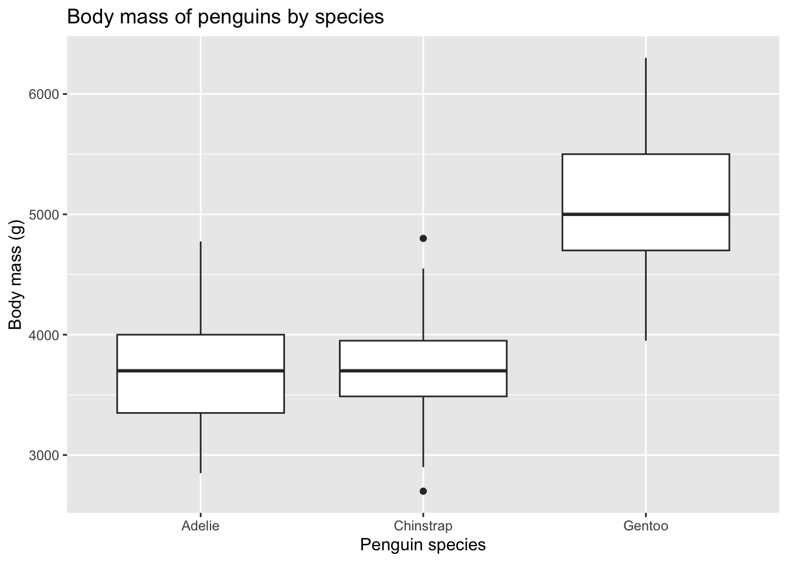
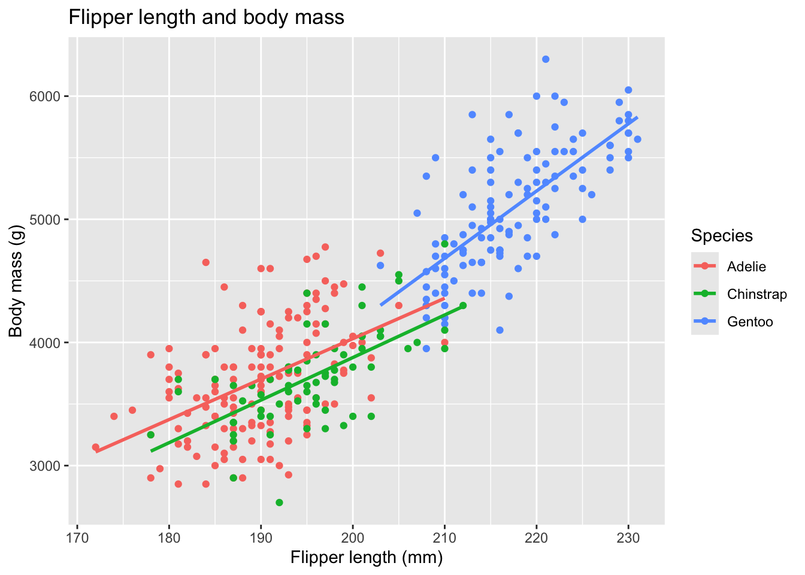

Data source: The data come from the palmerpenguins dataset, originally collected by Dr. Kristen Gorman and the Palmer Station Long Term Ecological Research program.
License: The data are available under the CC0 1.0 Universal license, in accordance with the Palmer Station LTER Data Policy and the LTER Data Access Policy for Type I data. The Python package used in this analysis is palmerpenguins. Its documentation also identifies the dataset as CC0.
Data source citation: Horst AM, Hill AP, Gorman KB (2020). palmerpenguins: Palmer Archipelago (Antarctica) penguin data. R package version 0.1.0. https://allisonhorst.github.io/palmerpenguins/. doi: 10.5281/zenodo.3960218.
Introduction
The Palmer Penguins dataset contains measurements of Adelie, Chinstrap, and Gentoo penguins observed in the Palmer Archipelago of Antarctica. In this analysis, I investigate how penguin species differ in body mass and flipper length, and whether flipper length is related to body mass.
Loading the data
I use the palmerpenguins package to access the dataset, dplyr for data manipulation, and ggplot2 for visualization.
# A tibble: 6 × 8
species island bill_length_mm bill_depth_mm flipper_length_mm body_mass_g
<fct> <fct> <dbl> <dbl> <int> <int>
1 Adelie Torgersen 39.1 18.7 181 3750
2 Adelie Torgersen 39.5 17.4 186 3800
3 Adelie Torgersen 40.3 18 195 3250
4 Adelie Torgersen NA NA NA NA
5 Adelie Torgersen 36.7 19.3 193 3450
6 Adelie Torgersen 39.3 20.6 190 3650
# ℹ 2 more variables: sex <fct>, year <int>
The dataset contains measurements including species, island, bill dimensions, flipper length, body mass, sex, and year. I first examine its dimensions and missing values.
cat("Number of observations:", nrow(penguins), "\n")
Number of observations: 344
cat("Number of variables:", ncol(penguins), "\n")
Number of variables: 8
colSums(is.na(penguins))
species island bill_length_mm bill_depth_mm
0 0 2 2
flipper_length_mm body_mass_g sex year
2 2 11 0
There are 344 observations and 8 variables. Some variables contain missing values, so I will handle missing observations when performing calculations that require specific measurements.
Comparing penguin species
I first calculate the number of observations and the average body mass and flipper length for each species.
# A tibble: 3 × 4
species n mean_body_mass_g mean_flipper_length_mm
<fct> <int> <dbl> <dbl>
1 Adelie 152 3701. 190.
2 Chinstrap 68 3733. 196.
3 Gentoo 124 5076. 217.
The summary shows differences in body size among the three species. Gentoo penguins have the largest average body mass and longest average flippers, while Adelie penguins have the smallest averages for both measurements. Chinstrap penguins are between the other two species for these measurements.
Body mass by species
To examine the distributions rather than only their averages, I create a boxplot of body mass by species.
ggplot( penguins,aes(x = species, y = body_mass_g)) +geom_boxplot() +labs(title ="Body mass of penguins by species",x ="Penguin species",y ="Body mass (g)" )
Warning: Removed 2 rows containing non-finite outside the scale range
(`stat_boxplot()`).

Figure 1: Body mass of penguins by species.
The figure shows that Gentoo penguins generally have higher body masses than Adelie and Chinstrap penguins. There is variation within each species, so comparing means alone does not capture the entire distribution.
Flipper length and body mass
Next, I investigate whether penguins with longer flippers also tend to have greater body mass. I remove observations missing either measurement before calculating the correlation.
The Pearson correlation is strongly positive. This indicates that penguins with longer flippers generally tend to have greater body mass.
I visualize this relationship and add a separate fitted regression line for each species.
ggplot( complete_penguins,aes(x = flipper_length_mm,y = body_mass_g,color = species )) +geom_point() +geom_smooth(method ="lm",se =FALSE ) +labs(title ="Flipper length and body mass",x ="Flipper length (mm)",y ="Body mass (g)",color ="Species" )
`geom_smooth()` using formula = 'y ~ x'

Figure 2: Relationship between flipper length and body mass, with separate regression lines by species.
The scatterplot shows a strong positive relationship between flipper length and body mass. The three species also occupy different regions of the plot, indicating that species is associated with differences in overall body size.